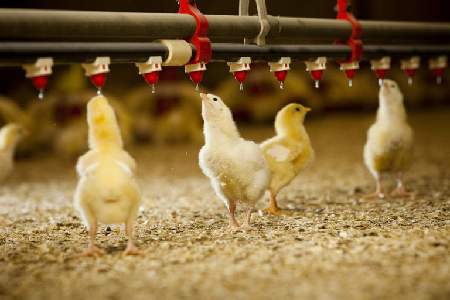
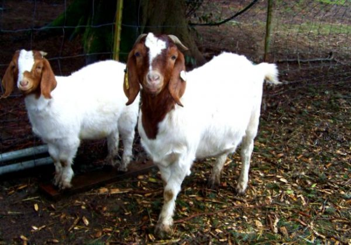
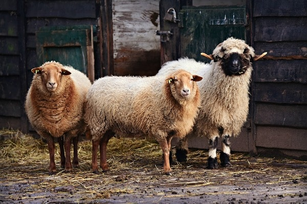

Introduction
The livestock sector (including poultry) plays a vital part in food systems and livelihoods of rural households in Sri Lanka, with more than 600,000 registered livestock farms, most of which are small-scale. Sri Lanka's livestock sector mainly comprises cattle, buffaloes, goats, sheep, pigs, and poultry. The livestock species play very important economic and socio-cultural roles for the wellbeing of rural households which include food supply, source of income, asset saving, source of employment, soil fertility, livelihoods, transport, agricultural traction, agricultural diversification and sustainable agricultural production.
Poultry
- 

Cattle and Buffaloes
- Ayrshire
- Friesian
- Jersey
- Sindhi
- Sahiwal
- Tharparkar (cattle)
- AMZ (Australian Milking Zebu)
- AFS (Australian Frisian x Sahiwal)
- Jersey
- Friesian
- AMZ
Goats
- There are many highly productive goat breeds throughout the country that can yeild good profits for meat and milk.
- Goats can be raised easily with other livestock.
- Goats can produce excellent manure which can be used for growing other agricultural crops.
- The best part is that its high profit.
- Irrespective of religion, goat meat is preferred throghout thr world.
Sheeps
- Dorset sheep breed
- Jaffna local sheep breed
- Bannur sheep breed
- Red Madras sheep breed
- Bikenary sheep breed
- Sheeps can tolerate all types of climates when compared to other livestock.
- Sheep can be handled easily.
- The maintenence of the sheep is also very cheap.
- A sheep gives us many by - products like meat, fiber and manure.
- The sheep gives more production as per unit of investment.
About 70 % of the contribution to the livestock sector in Sri Lanka is made up of chicken meat and eggs. Poultry products are now the most consumed source for animal protein in the diet of the average Sri Lankan as the industry today is in the hands of the private sector The village chicken contributes to about 15 % of the total egg production in the nation.The village chicken is reared both in the rural and suburban areas, however, they are frequently found in the rural villages of Sri Lanka. The industry is capable of meeting a considerable amount of local requirements for chicken meat and eggs.
Sri Lanka has approximately 750,000 cattle and buffaloe milk cows.
There are few breeds of dairy cattle used for milk production. The selection of a cattle breed largely depends on the bio-climatic condition in the region. European breeds are recommended for upcountry wet and intermediate zones, while Indian breeds are recommended for low country dry and intermediate zones. There are also cross breeds for the low country wet zone.
Cattle breeds for up country
Cattle breeds for low country
Cattle breeds for mid-country
Ayrshire
Friesian
Goat farming in Sri Lanka has nationla importance as this contributes a lot to the economy. Goat farming in Sri Lanka rural areas can be reared with other livestock such as sheep and cattle. Most of the villages of the country depend on goat farming for social security.
Benefits and Advantages of starting Goat Farming


The population of sheep is 130% more than the goat population. The sheep have a remarkable high efficiency in producing milk and meat.The breed, which is selected for rearing should be good and efficicent under all
circumstances. The main objrctive of the sheep farm should be the conservation and propogation of the pure breed. It is considered that the sheep economics is also 160% more than the goat economy.
Sheep breeds of Sri Lanka
Adavantages of Sheep Farming